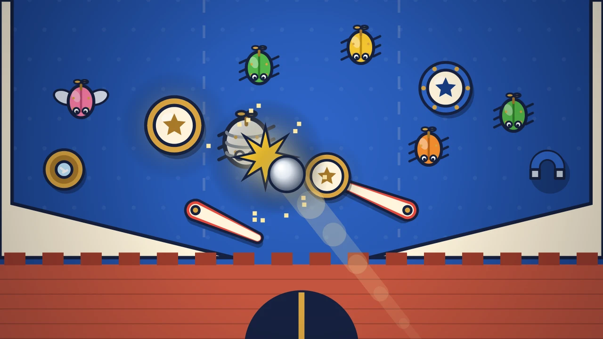

Moatball
Pinball tower defense: build bumpers and slingshots on the table, then flip one steel ball into the critters marching on your castle gate.
Moatball is a pinball tower defense game. Your castle gate sits at the bottom of a pinball table, a moat runs across the middle, and waves of wind-up critters are marching down the table to tear the gate. You have one steel ball, two flippers and whatever you can build between waves.
Between waves you pick parts from three cards and drop them into sockets on the table. Pop Bumpers kick the ball hard and shake nearby critters. Slingshots fire the ball back supercharged. Spinners throw darts as the ball passes, and Rampart Posts make critters walk the long way round. Later you unlock Magnets that bend the ball and slow critters, Zappers that chain lightning, Kick Saucers that catch the ball and fire it at the toughest target, and Splitters that add a second ball for a few seconds. Every part levels up the more the ball hits it, so where you put it matters as much as what you buy.
Then you start the wave and play pinball. The whole game works with one finger: touch and hold anywhere to raise both flippers, let go to drop them. Smash several critters in a row to build a combo up to x8 with a hit-stop crunch and a popup. Drain the ball and you lose the combo and half a heart from the gate. Six kinds of critter keep you changing your build: quick dashers, armoured shellbacks the ball must hit hard, flutters that fly over posts, splitbugs that burst into minis and shield bearers you must hit from behind. Every tenth wave brings a boss: the Tin Tortoise, the Ram Engine and the Clockwork Colossus.
Each wave lasts about a minute or two and has three stars: clear it, clear it without a leak, and clear it without a leak while reaching a x4 combo. Spend coins on boosts such as Gate Repair, Heavy Ball and Ball Saver, and spend gears earned from every run in the Workshop on permanent upgrades. Survive 30 waves to beat the table, then keep going in endless mode. The Daily Table gives every player the same seed and twist for the day, such as Rush Hour, Twin Balls or Thrift Shop, with a streak to keep.
After every run you see your best wave, your stars, the next unlock and where you would stand on the leaderboard. Until online leaderboards launch, that standing is an offline preview against sample players, and the game always says so. Share a card of your run with a challenge link that puts a friend on your exact table with your wave to beat. Progress saves automatically on your device. Moatball plays in portrait or landscape on phones, tablets and desktop, with touch, mouse or keyboard, and screen shake can be turned off in Settings.